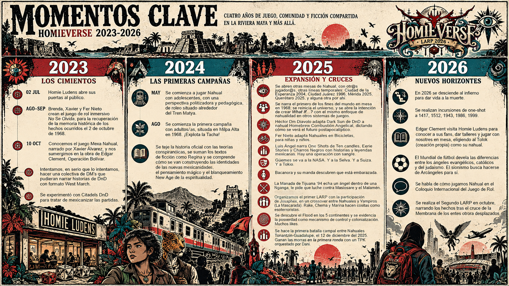

Álbum histórico del LARP 2025
Consulta la colección de fotografías que ya se encuentra publicada en Facebook.
Abrir álbum de Facebook ↗HomieVerse // Registro histórico
← Volver a la portadaMuseo histórico de HomieVerse
Toda actividad humana deja rastros. Este archivo conserva las imágenes, documentos, convocatorias y testimonios de las experiencias que hemos construido en las mesas de juego realizadas en Homie Ludens tejiendo así las historias que constituyen el HomieVerse.
Una memoria colectiva en construcción: cada partida, cada encuentro, cada diálogo y cada historia compartida forma parte de lo que somos.
01 // Memoria
Un recorrido por los encuentros, las experiencias y los hitos que han dado forma a nuestra comunidad.

Cronología histórica de HomieVerse.
02 // Registro visual
Imágenes de encuentros, personajes, escenarios y momentos que merecen permanecer en la memoria.
Consulta la colección de fotografías que ya se encuentra publicada en Facebook.
Abrir álbum de Facebook ↗03 // Fondo documental
Material gráfico y documental de las experiencias organizadas por la comunidad.
Anuncios, invitaciones y materiales de difusión de los eventos.
Materiales de ambientación, expedientes, programas y otros documentos vinculados con nuestras historias.
Identidades gráficas, programas y registros de HomieVerse.
Los materiales se incorporarán progresivamente con sus nombres y referencias correspondientes.
04 // Voces de la comunidad
Las historias no existen solamente en las fotografías: también viven en los recuerdos de quienes las jugaron.
Relatos de los acontecimientos, decisiones y consecuencias que dieron forma a cada experiencia.
Recuerdos y reflexiones de las personas participantes, publicados con su autorización.
05 // Archivo abierto
¿Tienes fotografías, carteles, documentos o recuerdos de una experiencia de HomieVerse? Este archivo también puede crecer con las aportaciones de quienes han formado parte de él.
Si compartes materiales, procura contar con la autorización necesaria para publicar fotografías y testimonios de otras personas.